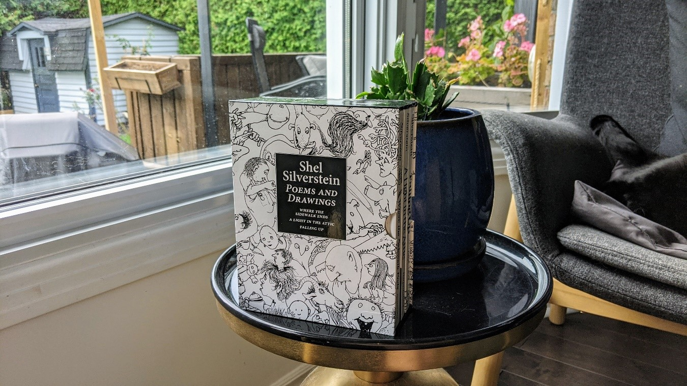
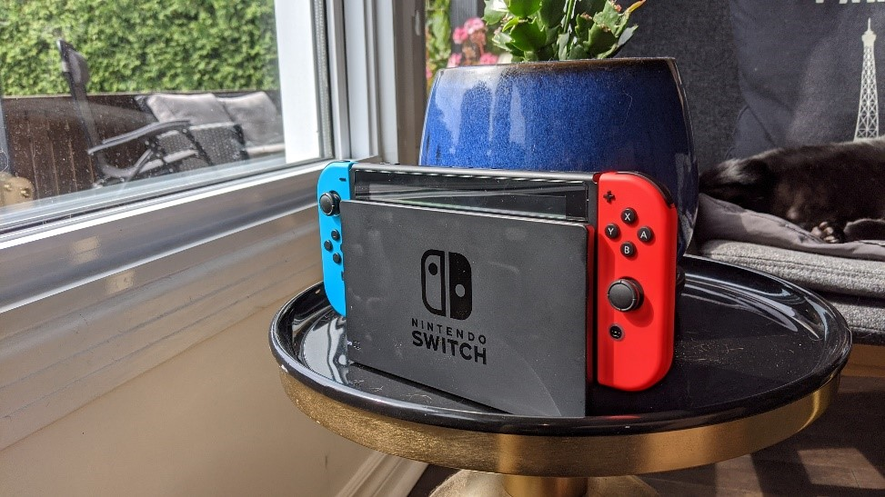
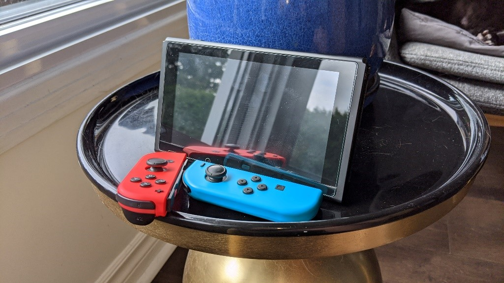
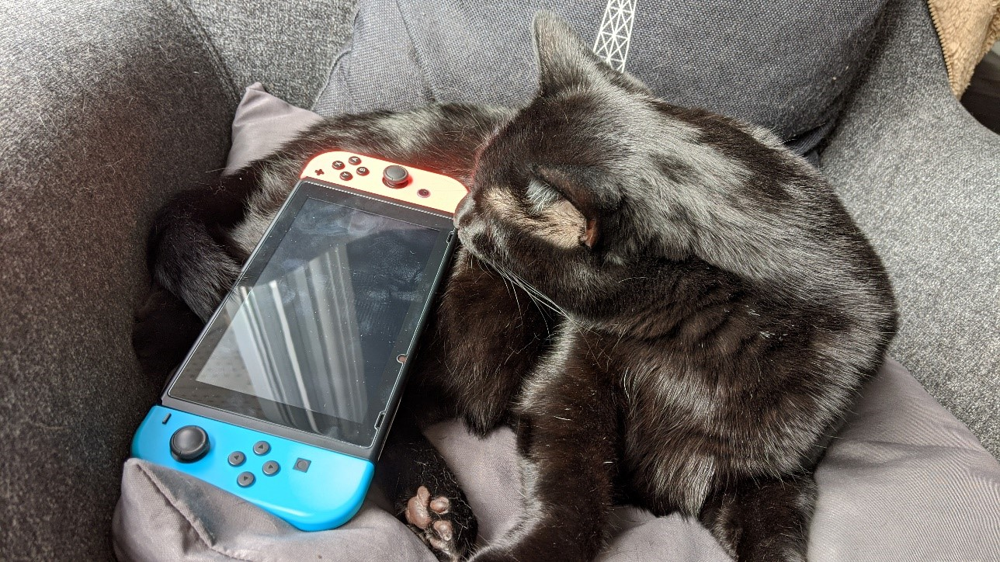
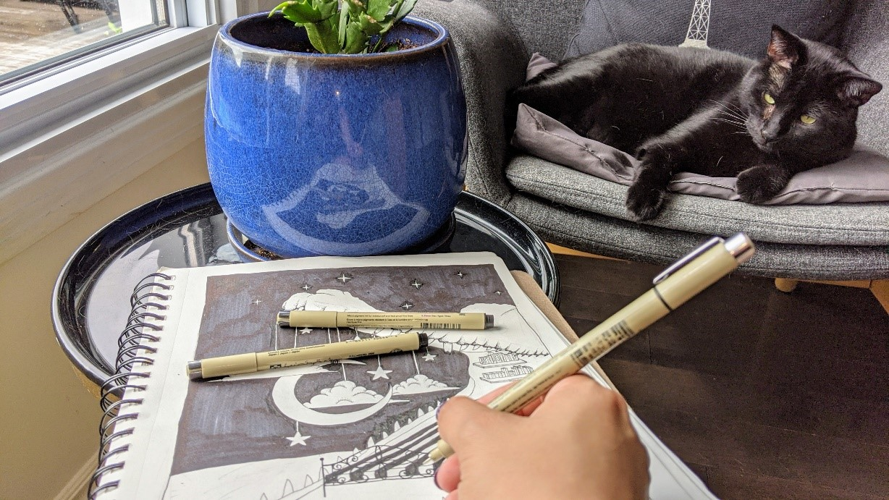

I’ve always loved reading, especially books with illustrations. During my childhood and my early teen, I read a lot of manga and comics. The Shel Silverstein collection holds a special place in my heart. It is the first thing that come to my mind about wonder and curiously. The book collection has a hard case containing three books by Shel Silverstein: Where the Sidewalk Ends, Alight In the Attic, and Falling up. The hard case cover has a collage of Shel Silverstein’s most recognizable illustrations. The sense of silliness and unexpected twists were what drew me into his poems and illustrations. Although Shel Silverstein only writes children’s poetry, I still find his writing and illustrations very interesting as an adult. I would say that his works influenced me so much as a child, that it still has impacts my drawing style today. His illustrations are the reason I love surrealism and dark humor.
The hard cover to protect the books. Most likely made of cardboard.
The books have hard covers, also made of cardboard.
The Nintendo Switch console is a gaming console released by Nintendo in 2017. The console has its main screen, and two detachable joy cons on the side, which are the controllers. On the two joy cons, each of them has one stick and four buttons. The design of the Nintendo Switch is very fascinating to me, because of its flexibility. To specify, the console can be played in three modes. The handheld mode allows the player to use the console wherever they go. Since both joy cons are attached to the console and the console also has touchscreen, playing games on-the-go is easy. The TV mode is accessible when the player puts the Nintendo Switch in the Dock that is connected to a TV with a HDMI cable, which allows a much bigger display. Player can also detach the controllers to play in a distance. The tabletop mode is accessible when the player flips the stand at the back of the console. This mode also allows the players to detach the joy cons. Most importantly, I find the design of the controller unique. The player must slide the joy cons up or down to attach or detach it from the console. The “sliding” mechanic is something we have never seen in the gaming console industry before.
The “docking” mode, which allows the player to connect the Switch with a bigger screen. 
The tabletop mode. The joy cons are detachable.
Sakura Pigma Pens are my favorite tools when I am creating illustrations. I have gone through many of them over the past few years. The pens are beige outside, and the most popular ink color is black, which is also what I use. The ink is smudge-proof and very pigmented. The pens have a molecular structure, which makes it easy to handle. The pens are also waterproof and fade resistant. The caps snap securely and sit on the top of the pens, which prevents the artist from losing the cap. Sakura Pigma carries many types of pens, including pens for graphics, calligraphy, brush, writing and drawing.
I use the Micro Pen the most, because I do a lot of fine line drawing with dot works. The Micro pens have various sizes, from 0.5mm tips to 0.2mm tips. The needle point tip is very fine, which allows the artists to create precise lines. The Sakura Pigma Micro Pens are significant to me, because the product design contributes to a unique user experience for artists. There are so many creative possibilities. I have been drawing since high school, the illustrations that I have created are the documentation of how I have grown as an artist. And most importantly, how I have grown as a person in the past few years.
The 0.5mm, 0.3mm and 0.1mm tips.
The pens are in thin cylinder shape, which is easy to handle, allowing me to draw anywhere. The cap is also secure to the bottom.
I want to design an interactive clock inspired by an illustration in A Light in the Attic by Shell Silverstein. The small door on the top of the character’s head would be able to open/close depending on the action of the user. There will also be lights/music displaying depending on the different commands from the user.